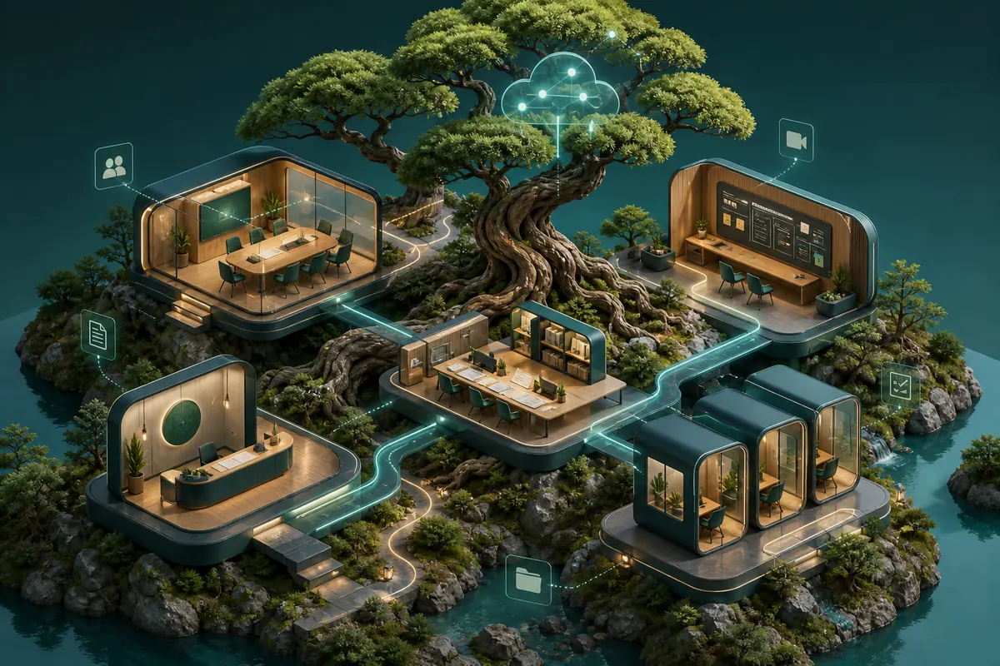
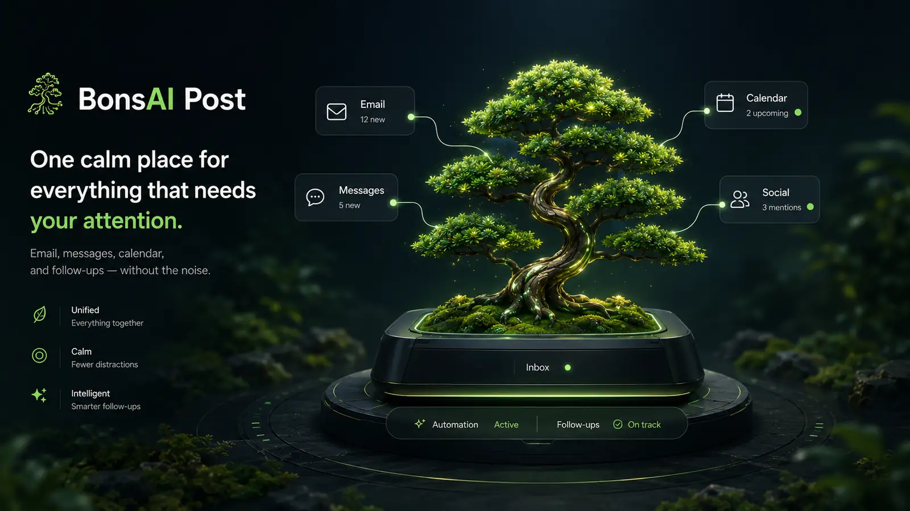
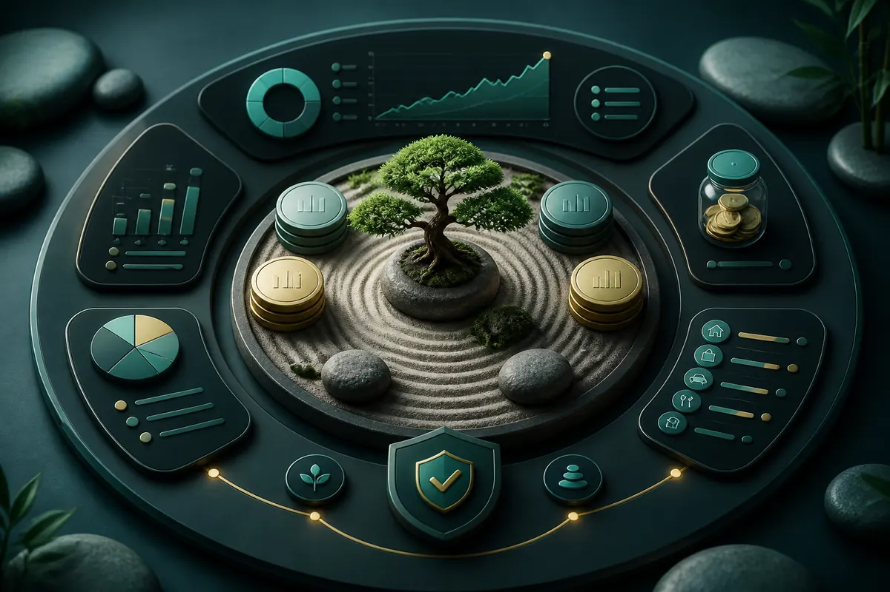

Tworzymy proste narzędzia, które przejmują powtarzalne zadania, porządkują informacje i pomagają szybciej podejmować decyzje. Nie musisz znać się na technologii — aplikacja ma po prostu ułatwiać pracę.
Prosta obsługaDziała na telefonieWsparcie po uruchomieniu

01 / BonsAI City
Połącz zespół, nie dodając chaosu.
BonsAI City to wspólna cyfrowa przestrzeń, w której ludzie, projekty, dokumenty, spotkania i obowiązki znajdują się w jednym czytelnym środowisku.
Zamiast szukać w różnych czatach, folderach i narzędziach, każda osoba widzi informacje potrzebne do swojej pracy.
Jedno miejsce dla zespołu, projektów i komunikacji.
Jasne odpowiedzialności i postęp bez ciągłych spotkań.
Widoki dopasowane do osób, ról i projektów.
Po ludzku: Cyfrowa siedziba firmy stworzona do współpracy, a nie gromadzenia bałaganu.
02 / BonsAI Mountain
Zamień wielki cel w kolejny jasny krok.
BonsAI Mountain zamienia ambitne cele w etapy, małe działania i czytelne priorytety na każdy dzień.
Zamiast patrzeć na ogromny projekt lub niekończącą się listę zadań, zawsze wiesz, jaki jest następny sensowny krok i jak wysoko już dotarłeś.
Dziel duże cele na etapy i wykonalne działania.
Skup się na tym, co ważne dzisiaj, zamiast na wszystkim naraz.
Obserwuj postęp bez tworzenia raportów.
Po ludzku: Wybierz szczyt. BonsAI Mountain pokaże Ci drogę.

03 / BonsAi Office
Spokojniejszy sposób na codzienną pracę.
BonsAi Office łączy najważniejsze elementy dnia w jednej prostej przestrzeni: zadania, kalendarz, notatki, spotkania, dokumenty, projekty i sprawy wymagające uwagi.
Usuwa zbędne ekrany i menu, aby można było otworzyć Office, zrozumieć swój dzień i od razu rozpocząć pracę.
Zobacz dzisiejsze zadania, priorytety i spotkania jednym spojrzeniem.
Trzymaj zadania, notatki, dokumenty i projekty blisko siebie.
Ogranicz przełączanie się między narzędziami.
Po ludzku: Wszystko, czego potrzebujesz dzisiaj do pracy — bez kolejnego skomplikowanego panelu.

04 / BonsAI Garden
Przestań zarządzać swoimi aplikacjami.
BonsAI Garden łączy używane narzędzia w jedną spokojną warstwę informacji, działań i automatyzacji.
E-mail, kalendarz, wiadomości, social media, pliki i inne usługi mogą zasilać jeden Garden. Zamiast pokazywać wszystko, BonsAI wskazuje to, co naprawdę wymaga Twojej uwagi.
Ty wybierasz aplikacje i funkcje należące do Twojego Garden. Reszta nie przeszkadza w pracy.
Połącz aplikacje i usługi, które są dla Ciebie ważne.
Widzisz tylko wiadomości, wydarzenia i działania wymagające uwagi.
Kodama wykonuje powtarzalną pracę i rutynowe automatyzacje w tle.
Po ludzku: Twoje aplikacje nadal wykonują swoją pracę. Garden sprawia, że nie musisz stale ich sprawdzać.
System BonsAI
Cztery narzędzia. Cztery jasne zadania.
BonsAI CityLudzie i współpraca.
BonsAI MountainCele i postęp.
BonsAi OfficeCodzienna praca i skupienie.
BonsAI GardenAplikacje, uwaga i automatyzacja.
Mogą działać niezależnie albo rosnąć razem jako jeden ekosystem BonsAI.
Ludzie współpracują w City.Cele rosną na Mountain.Praca odbywa się w Office.Wszystko łączy się przez Garden.
Nie musisz wiedzieć, czego potrzebujesz
Zacznijmy od problemu, nie od technologii.
Opowiedz, co w firmie zabiera najwięcej czasu albo powoduje chaos. Bezpłatnie sprawdzimy, czy warto tworzyć aplikację i zaproponujemy najprostszy sensowny pierwszy krok.